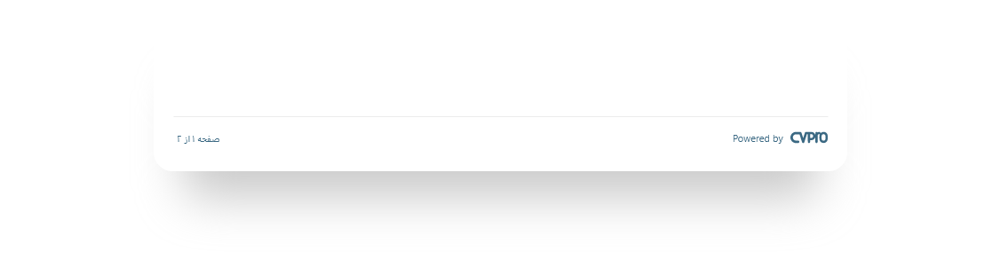
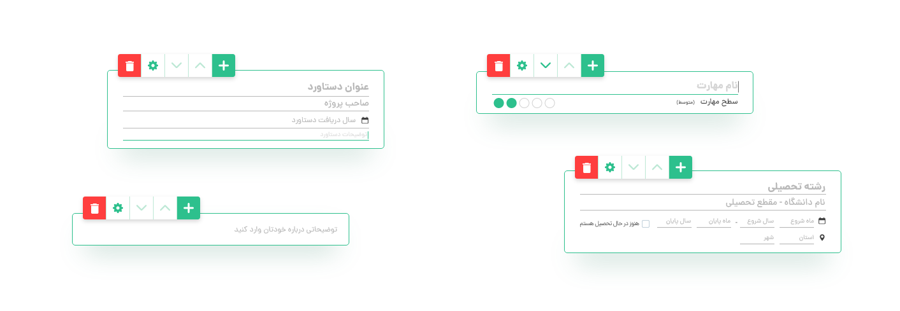
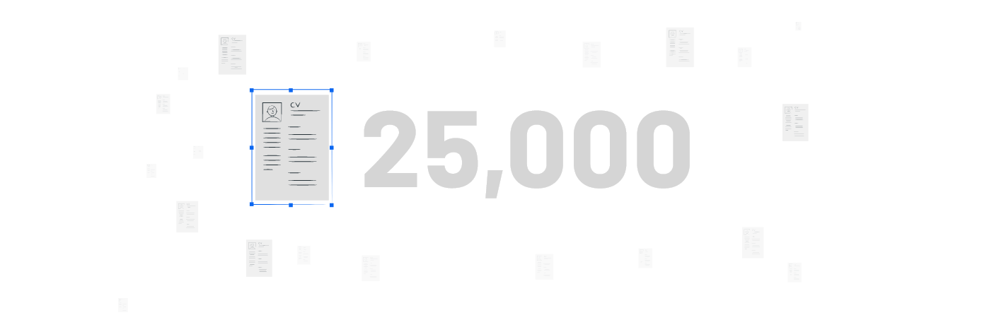

Resume Builder
___________________________________
IMPRESSIVE RESUMES EASY ONLINE BUILDER
Creating a strong resume is necessary to get hired. We lunch the best services you can use to make your resume stand out, in Iran.
An eye-catching resume is a requirement for job searching in any industry, at any level of experience. But the thought of writing a professional resume on your own leaves a lot of job seekers feeling confused and overwhelmed. Recruiters see your resume and decide about continuing with you or not. An eye-catching resume is a requirement for job searching in any industry, at any level of experience. But the thought of writing a professional resume on your own leaves a lot of job seekers feeling confused and overwhelmed.
Goals
Shetab is a big company in the human resources field. Stack holders want to provide a platform for employees. They started it with this project. A CV maker named CVPro. The main goal for CVPro was an honest, user-centered, straightforward, and almost free experience for users to create their resumes intuitively, even if they are not tech-savvy or good at design.
Challenges
What do our users need? What information do they need? What could we bring that feeling to our project? How could CVPro be user-friendly? Which of all possible features will add real value to this product?
Solutions
Here I write about some soloutions that we took
Persian Base
Since most of our users are Persian speaking and we haven't any competitors in the Persian language, which makes us unique in the first step, it seemed reasonable to be a Persian language base resume maker. When the Persian Language could see and read familiarly, this helps to convey a real sense of convenience. According to the surveys, 38% of customers want to write their resume in English, 4% Arabic, and about 2% chosen other languages. It showed us that we could increase our user base by providing English as another resume vocabulary.
Almost free with less bothering
So what can we do? We need a financial strategy and also want to be user-friendly :). Our surveys, usability, and AB testing found that having a little stump on their resume was unimportant for users but useful and user-centered. Also, we found that about 100% of Users' needs met with standard settings.
Easy switching
We recognized that adding a section, editing it, switch to another area were the most painful part of writing a resume online. Indeed for finding the more suitable way, we stuck to tests, and in the end, we reached a suitable wireframe.
Results
When releasing the website, I only knew that at least the people who asked me to design a resume for them would not need my help. Fortunately, more than 25,000 resumes were downloaded during its first two months.